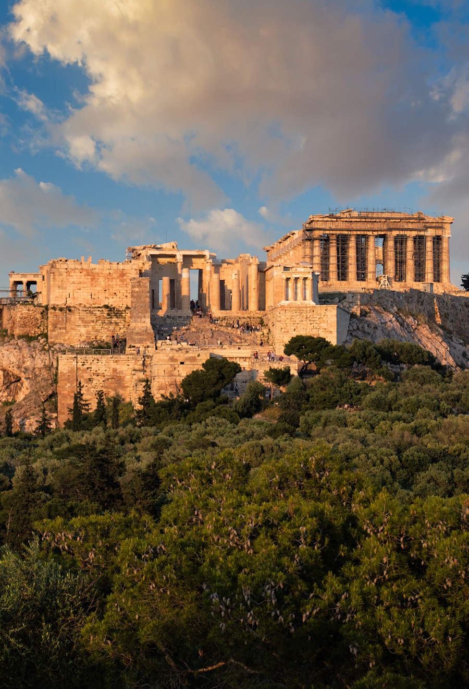
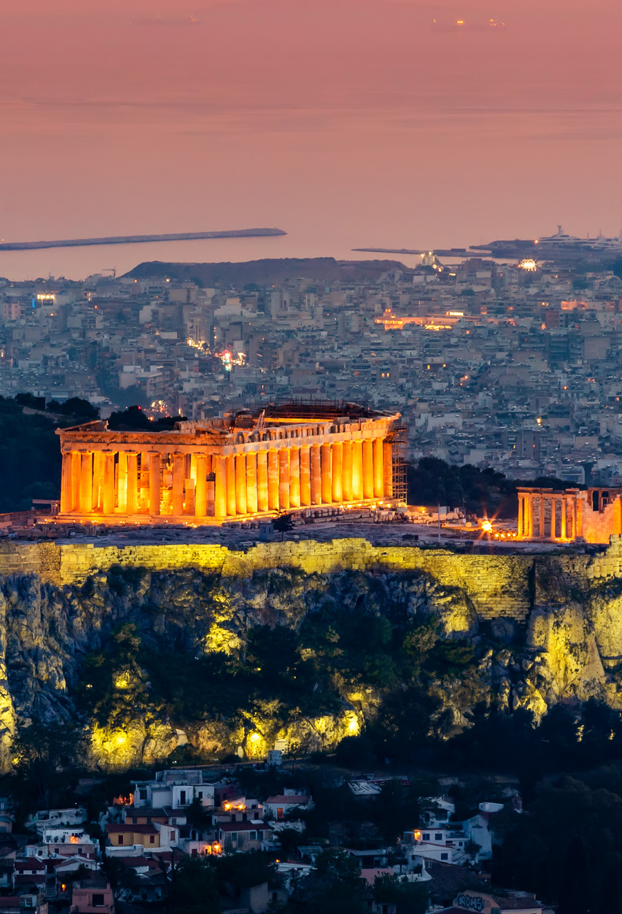
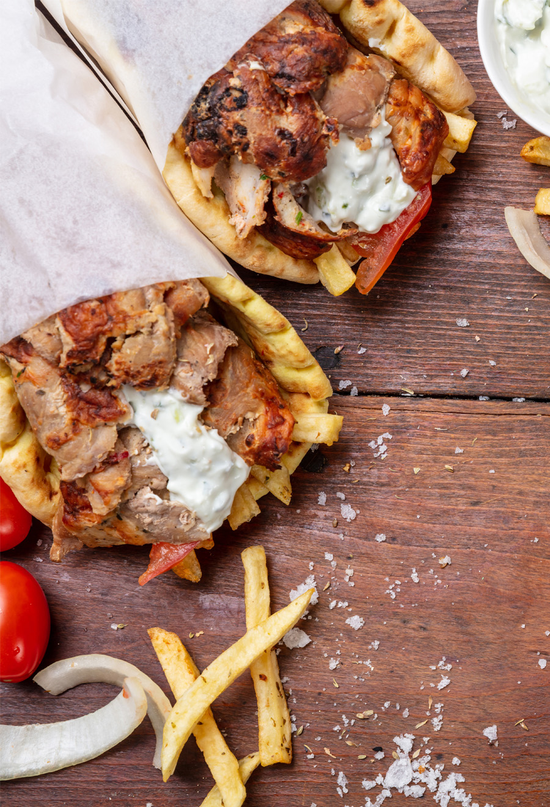

Wo das Meer auf Geschichte trifft
Die beeindruckendsten Reiseziele in Griechenland
Von antiken Tempeln und historischen Städten bis zu traumhaften Stränden und malerischen Inseln bietet Griechenland eine einzigartige Mischung aus Kultur, Natur und Entspannung. Besucher können die faszinierende Geschichte des Landes entdecken, die mediterrane Küche genießen und unvergessliche Momente am Meer erleben.
 Lesezeit: 6 min.
Lesezeit: 6 min. Lesen: 164
Lesen: 164 Teilen: 18
Teilen: 18Ich reise seit 2017 durch verschiedene Länder und entdecke neue Kulturen, Städte und Landschaften. Besonders faszinieren mich historische Orte, lokale Traditionen und das mediterrane Lebensgefühl. Ich liebe es, neue Reiseziele zu erkunden, besondere Momente festzuhalten und meine Erfahrungen mit anderen zu teilen. Für mich ist jede Reise eine neue Gelegenheit, die Welt besser kennenzulernen.
Top 4 Reiseziele in Griechenland für 2026



Griechenland gehört zu den beliebtesten Reisezielen Europas und begeistert Besucher mit seinem sonnigen Klima, beeindruckenden Landschaften und der herzlichen Gastfreundschaft seiner Menschen. Die Kombination aus traumhaften Stränden, kulturellen Sehenswürdigkeiten und mediterranem Lebensgefühl macht das Land zu einem idealen Ort für Erholung und Abenteuer. Diese fünf Reiseziele zählen zu den Highlights, die Sie bei Ihrer nächsten Reise unbedingt entdecken sollten.
Die beliebtesten Aktivitäten an den Stränden Griechenlands:
- Schwimmen und Entspannen in kristallklarem Wasser.
- Trinken Sie ausreichend Wasser und verwenden Sie Sonnenschutz, besonders während der heißen Sommermonate.
- Spaziergänge entlang der Küste und durch malerische Strandorte.
- Genießen regionaler Spezialitäten in Strandrestaurants.
Pro tipps
- Planen Sie Ihre Ausflüge früh am Morgen, um große Menschenmengen und hohe Temperaturen zu vermeiden. google.com.
- Nutzen Sie öffentliche Verkehrsmittel oder Mietroller, um sich schnell und günstig in der Stadt fortzubewegen.
Griechenland ist ein Land voller Geschichte, beeindruckender Landschaften und kultureller Vielfalt. Von den antiken Tempeln in Athen bis zu den idyllischen Stränden der griechischen Inseln gibt es unzählige Orte zu entdecken. Besucher können durch historische Altstädte spazieren, traditionelle Märkte erkunden und die berühmte griechische Gastfreundschaft erleben. Neben kulturellen Sehenswürdigkeiten bietet Griechenland auch zahlreiche Möglichkeiten zur Erholung und Entspannung. Das warme Klima, das klare Wasser des Mittelmeers und die vielfältige Natur machen das Land zu einem perfekten Reiseziel für Familien, Paare und Abenteuerlustige. Besonders beliebt sind Bootsausflüge zu den Inseln, Wanderungen durch beeindruckende Landschaften und kulinarische Erlebnisse in lokalen Tavernen.
Folge mir für weitere spannende Inhalte und teile den Artikel mit deinen Freunden!